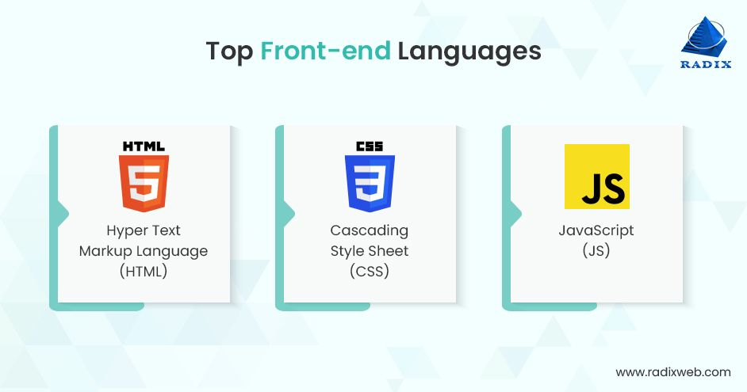
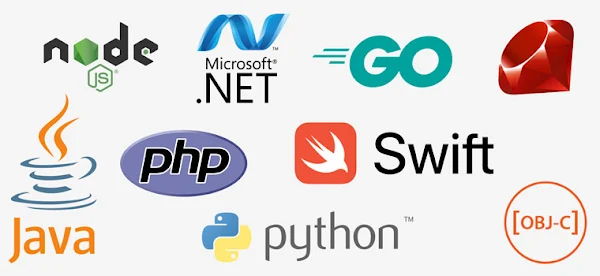

Project On Web-Development


BRIEF ABOUT WEB-DEVELOPMENT

Web development is the process of building and maintaining websites or web applications, involving a combination
of programming, design, and various technologies. It encompasses everything from creating simple static web
pages to complex dynamic web applications. The key components of web development include:
1. Client-Side (Front-end) Development:
HTML (Hypertext Markup Language): Defines the structure and content of web pages.
CSS (Cascading Style Sheets): Styles the presentation and layout of HTML elements.
JavaScript: Enables dynamic and interactive features on the client side, allowing for user interactions and
real-time updates.
Server-Side (Back-end) Development:
2. Server:
Manages requests from clients, processes data, and sends responses.
Back-end Programming Languages: Such as Python, Ruby, PHP, Java, or Node.js, handle server-side logic and
database interactions.
Database Management Systems (DBMS): Like MySQL, PostgreSQL, or MongoDB, store and retrieve data.
3. Full-Stack Development:
Involves proficiency in both front-end and back-end development, allowing developers to work on all aspects of a
web application.
4. Web Development Frameworks and Libraries:
Front-end Frameworks:

Like React.js, Angular, or Vue.js, provide pre-built components and tools for efficient
development.
Back-end Frameworks:

Such as Django (Python), Ruby on Rails, or Express.js (Node.js), streamline server-side
development.
5. Web Architecture:
Client-Server Model: Separates the client (user interface) and server (data processing), enhancing
scalability
and maintenance.
RESTful APIs (Application Programming Interfaces): Enable communication between different parts of a web
application, facilitating data exchange.
6. Web Development Tools:
Text Editors/IDEs: Like Visual Studio Code, Atom, or Sublime Text, for writing and editing code.
Version Control Systems: Such as Git, help manage and track changes in code collaboratively.
Package Managers: Like npm (Node Package Manager) or pip (Python Package Installer), simplify the process of
installing and managing libraries.
7. Responsive Web Design:
Ensures that websites and applications function well on various devices and screen sizes.
8. Web Security:
Involves implementing measures to protect against common web vulnerabilities, such as Cross-Site Scripting (XSS)
and Cross-Site Request Forgery (CSRF).
Web development is a dynamic field, and developers continually adapt to new technologies and trends to create
efficient, secure, and user-friendly web experiences.
HOW TO BECOME A WEB-DEVELOPER ?

Becoming a web developer involves a combination of education, practical experience, and ongoing learning. Here
is a step-by-step guide to help you become a web developer:
Languages To Learn

1. Set Clear Goals:
Identify the specific areas of web development you are interested in, such as front-end, back-end, or full-stack
development.
Understand the technologies and programming languages commonly used in web development.
2. Learn the Basics:
HTML, CSS, and JavaScript: Master the fundamentals of front-end development.
Responsive Design: Understand how to create websites that work well on different devices.
3. Choose a Specialization:
Decide whether you want to focus on front-end (user interface), back-end (server-side logic), or full-stack
development (both).
4. Learning a Server-Side Language:
Choose a back-end programming language such as Python, Ruby, PHP, Java, or JavaScript (Node.js).
5. Understanding Databases:
Learn how to interact with databases using SQL (Structured Query Language) or NoSQL databases like MongoDB.
6. Explore Frameworks and Libraries:
Familiarize yourself with popular front-end frameworks (e.g., React.js, Angular, Vue.js) and back-end frameworks
(e.g., Django, Ruby on Rails, Express.js).
7. Version Control:
Learn to use version control systems like Git and platforms like GitHub for collaborative development.
8. Build Projects:
Apply your knowledge by working on real projects. Start with simple ones and gradually increase complexity.
9. Create a Portfolio:
Showcase your projects on a personal portfolio website. Include details about the technologies you used and the
problems you solved.
10. Stay Updated:
Web development evolves rapidly. Stay informed about the latest technologies, tools, and best practices.
11. Networking:
Join online communities, attend local meetups, and connect with other developers. Networking can provide
support, mentorship, and job opportunities.
12. Continuing Education:
Invest time in continuous learning. Take online courses, attend workshops, and read industry blogs to stay
current.
13. Build a Professional Online Presence:
Create profiles on professional networking platforms like LinkedIn. Highlight your skills, projects, and
experiences.
14. Internships and Freelance Work:
Gain practical experience through internships or freelance projects. Real-world experience is invaluable.
15. Apply for Jobs:
Start applying for entry-level web developer positions. Tailor your resume and cover letter to showcase your
skills and projects.
16. Prepare for Interviews:
Brush up on common interview questions, practice coding challenges, and be ready to discuss your projects and
problem-solving skills.
17. Accept Feedback and Keep Improving:
Be open to feedback from peers and mentors. Use it to enhance your skills and address areas for improvement.
18. Advance Your Skills:
As you gain experience, consider diving deeper into specific technologies or exploring new areas of web
development.
Remember, becoming a proficient web developer is a gradual process that requires dedication, hands-on
experience, and a commitment to continuous learning. Be patient with yourself, and enjoy the journey of building
your skills and expertise.
Companies Hiring For WEB-DEVELOPER